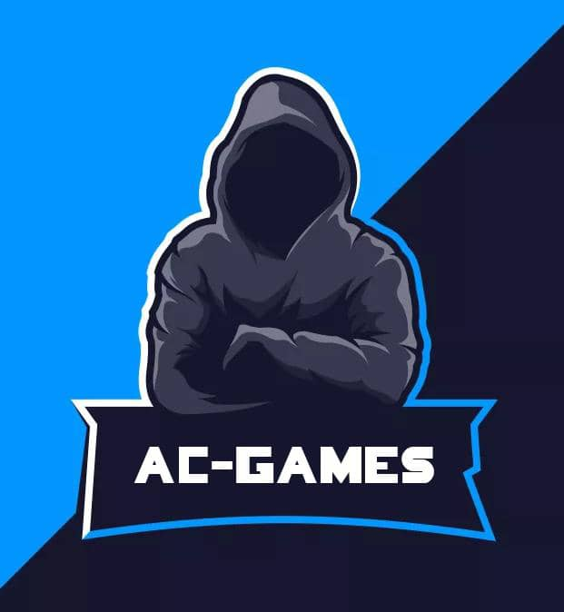

Anthony Carrillo
Ingeniero de Software
Soy un ingeniero de software, desarrollo apps para escritorio(PCs) y dispositivos móviles(Android) con 3 años de experiencia creando programas y videojuegos básicos bajo mi misma "empresa" AC GAMES.
Habilidades
Escribiendo código.
Crear videojuegos.
Desarrollar programas multiplataforma.
Mantenimiento a computadoras.
Instalación de software y sistema operativo.
C++, C# y Python.
MySQL.
GIMP, Photoshop e Inkscape.
Experiencia
Ingeniero de software junior AC GAMES | 2020-pesente Desarrollador, instalo y configuro aplicaciones, diseño gráfico, testeo de apliciones, lanzamiento de la aplicación, trabajar con simbolo del sistema, crear versiones de respaldo con git y limpieza de las computadoras.
Educación
Bachillerato en U.E.P "Juan de Bolívar y Villegas" Villa de Cura, Estado Aragua.
Grado de estudio: Actualmente universitario en la Uiversidad Nacional Experimental Rómulo Gallegos(UNERG), Ingeniería de Sistemas(AIS), San Juan de los Morros, Estado Guárico.
Contacto
Telf: 0412-1438904